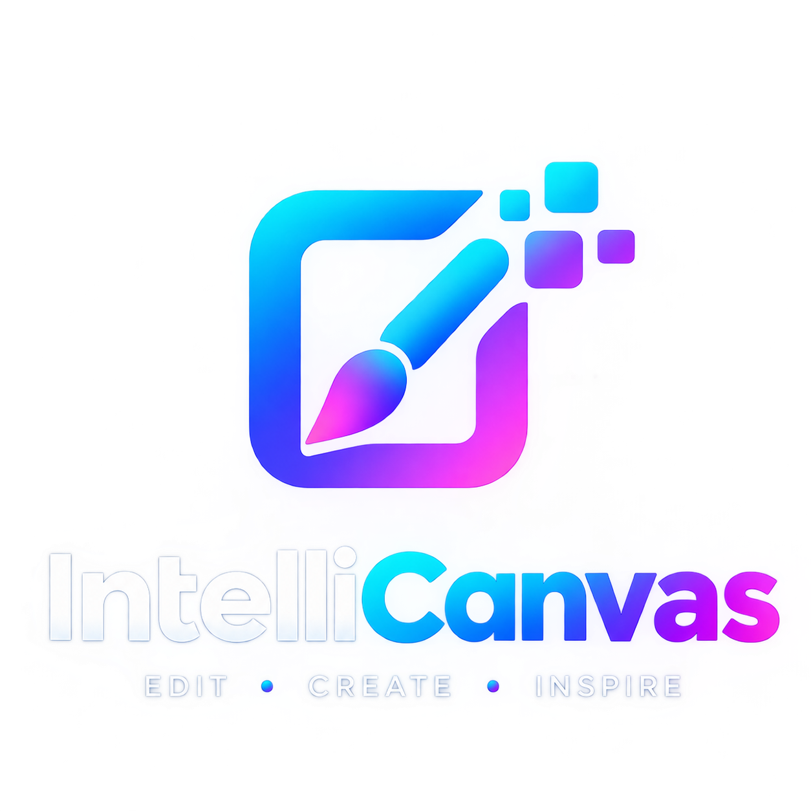

Original
Edited preview
↔
Start with an image
Drop an image here or choose a file to begin your canvas.
PNG, JPG, WEBP or BMP · up to 10 MBCrop0 × 0 px
PREVIEW CANVAS

Drop an image here or choose a file to begin your canvas.
PNG, JPG, WEBP or BMP · up to 10 MB